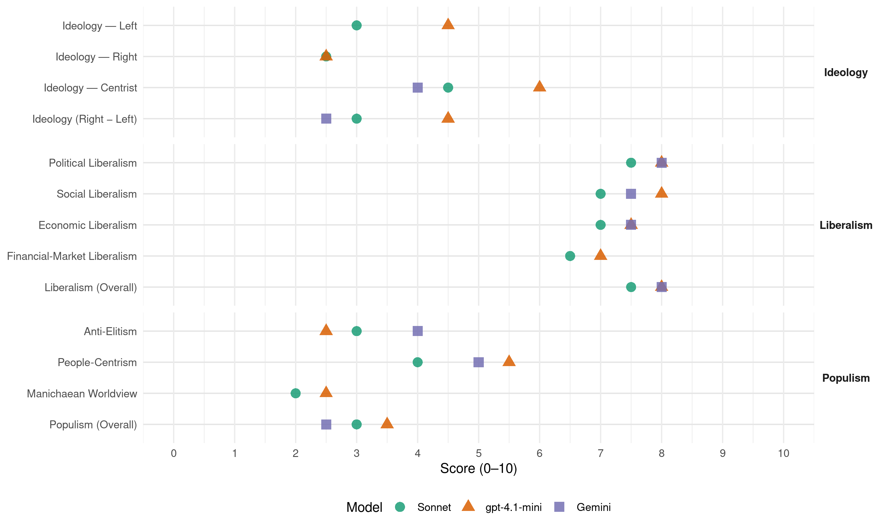

UDF (France, 2002)
manifesto_id 31624_200206
Get full text: This site shows derived annotations and short verbatim quotes only. The full manifesto text is © Manifesto Project / WZB — obtain it via manifesto-project.wzb.eu using the manifesto_id above.
Headline scores
| Dimension | Sonnet | gpt-4.1-mini | Gemini |
|---|---|---|---|
| Populism (Overall) | 3.0 | 3.5 | 2.5 |
| Anti-Elitism | 3.0 | 2.5 | 4.0 |
| People-Centrism | 4.0 | 5.5 | 5.0 |
| Manichaean Worldview | 2.0 | 2.5 | – |
| Ideology (Right − Left) | 3.0 | 4.5 | 2.5 |
| Liberalism (Overall) | 7.5 | 8.0 | 8.0 |
| Political Liberalism | 7.5 | 8.0 | 8.0 |
| Social Liberalism | 7.0 | 8.0 | 7.5 |
| Economic Liberalism | 7.0 | 7.5 | 7.5 |
| Financial-Market Liberalism | 6.5 | 7.0 | – |
Evidence per dimension
Economic Liberalism
Gemini · score 8.0 · verified · chunk 1
“libérer les énergies aujourd’hui menottées”
Mais les lourdeurs du système français, les carcans de l’administration freinent l’esprit d’audace et l’enthousiasme pourtant propre à chaque Français. Pour que la France retrouve son rang, pour que chacun ait une place digne dans notre société, pour que la croissance profite à tous, il faut donc impérativement libérer les énergies aujourd’hui menottées
Gemini · score 7.0 · verified · chunk 2
“l’ouverture progressive du capital d’EDF”
Nous proposons l’ouverture progressive du capital d’EDF pour lui permettre de rester un champion mondial.
gpt-4.1-mini · score 8.0 · verified · chunk 1
“la fiscalité doit être allégée”
La fiscalité doit être allégée : son poids pousse les hommes, les capitaux et les entreprises à se délocaliser… pour créer de la richesse ailleurs.
gpt-4.1-mini · score 7.0 · verified · chunk 2
“développement d’un revenu minimum d’activité”
Nous transformerons le RMI (revenu minimum d’insertion) en RMA (revenu minimum d’activité) car le travail est le premier facteur d’intégration. Nous proposons qu’au bout de six mois de RMI, tout érémiste se voie proposer par une collectivité locale ou une association, une activité minimum d’utilité publique à mi-temps éventuellement accompagnée d’une formation en entreprise.
Sonnet · score 8.0 · verified · chunk 1
“La fiscalité doit être allégée”
La fiscalité doit être allégée : son poids pousse les hommes, les capitaux et les entreprises à se délocaliser
Sonnet · score 6.0 · verified · chunk 2
“ouverture du marché pour développer le transport”
Nous sommes favorables à l’ouverture du marché pour développer le transport de marchandises par le rail
Financial-Market Liberalism
gpt-4.1-mini · score 7.0 · verified · chunk 1
“la réduction de la part des cotisations patronales”
Nous proposons de réduire progressivement la part des cotisations patronales d’assurance maladie et familiales, qui seront financées par de nouvelles ressources.
Sonnet · score 7.0 · verified · chunk 1
“harmonisant la fiscalité sur les facteurs de production”
en diminuant l’impôt sur les sociétés, la TVA sur les activités à forte main d’œuvre, en harmonisant la fiscalité sur les facteurs de production les plus mobiles
Sonnet · score 6.0 · verified · chunk 2
“ouverture progressive du capital d’EDF”
Nous proposons l’ouverture progressive du capital d’EDF pour lui permettre de rester un champion mondial
Political Liberalism
Gemini · score 8.0 · verified · chunk 1
“un pouvoir législatif authentique, et un pouvoir judiciaire fort”
la démocratie c’est un Président responsable, un pouvoir législatif authentique, et un pouvoir judiciaire fort et indépendant. Mais la priorité est de remettre
Gemini · score 8.0 · verified · chunk 2
“Assurer la défense de la démocratie”
Assurer la défense de la démocratie à travers le modèle culturel de la diversité
gpt-4.1-mini · score 8.0 · verified · chunk 1
“un pouvoir judiciaire fort, indépendant et efficace”
Pour nous, la démocratie c’est un Président responsable, un pouvoir législatif authentique, et un pouvoir judiciaire fort et indépendant.
gpt-4.1-mini · score 8.0 · verified · chunk 2
“la sécurité est le premier des droits des citoyens”
La sécurité est le premier des droits des citoyens, le premier devoir de l’Etat à leur égard. C’est ce droit qui leur est aujourd’hui refusé, et d’abord aux plus démunis. Nous pensons que la sécurité est l’affaire des modérés. Seuls les modérés doivent faire régner l’ordre républicain sans remettre en question les droits légitimes de chacun.
Sonnet · score 8.0 · verified · chunk 1
“un pouvoir judiciaire fort et indépendant”
Pour nous, la démocratie c’est un Président responsable, un pouvoir législatif authentique, et un pouvoir judiciaire fort et indépendant
Sonnet · score 7.0 · verified · chunk 2
“droits légitimes de chacun”
Seuls les modérés savent agir avec fermeté, sans angélisme, pour que chacun ait un véritable usage de sa liberté… sans remettre en question les droits légitimes de chacun
Liberalism (Overall)
Gemini · score 8.0 · verified · chunk 1
“libérer les énergies aujourd’hui menottées”
Mais les lourdeurs du système français, les carcans de l’administration freinent l’esprit d’audace et l’enthousiasme pourtant propre à chaque Français. Pour que la France retrouve son rang, pour que chacun ait une place digne dans notre société, pour que la croissance profite à tous, il faut donc impérativement libérer les énergies aujourd’hui menottées
Gemini · score 8.0 · verified · chunk 2
“Assurer la défense de la démocratie”
Assurer la défense de la démocratie à travers le modèle culturel de la diversité
gpt-4.1-mini · score 8.0 · verified · chunk 1
“un pouvoir judiciaire fort, indépendant et efficace”
Pour nous, la démocratie c’est un Président responsable, un pouvoir législatif authentique, et un pouvoir judiciaire fort et indépendant.
gpt-4.1-mini · score 8.0 · verified · chunk 2
“la sécurité est le premier des droits des citoyens”
La sécurité est le premier des droits des citoyens, le premier devoir de l’Etat à leur égard. C’est ce droit qui leur est aujourd’hui refusé, et d’abord aux plus démunis. Nous pensons que la sécurité est l’affaire des modérés. Seuls les modérés doivent faire régner l’ordre républicain sans remettre en question les droits légitimes de chacun.
Sonnet · score 8.0 · verified · chunk 1
“libérales et sociales”
Nul ne contestera à l’UDF la permanence des siennes, humanistes, européennes, libérales et sociales
Sonnet · score 7.0 · verified · chunk 2
“liberté de choix de son praticien”
nous réaffirmons notre attachement à une médecine libérale qui passe par la liberté de choix de son praticien, par la liberté de prescription
Anti-Elitism
Gemini · score 4.0 · verified · chunk 1
“le pouvoir n’est pas contrôlé par les peuples”
Dans l’Europe telle qu’elle s’organise aujourd’hui, le pouvoir n’est pas contrôlé par les peuples. Les citoyens ne peuvent adhérer à ses choix
Gemini · score 4.0 · verified · chunk 2
“le mensonge entretenu par le gouvernement Jospin”
révèle l’impuissance du système politique français et le mensonge entretenu par le gouvernement Jospin depuis quatre ans.
gpt-4.1-mini · score 2.0 · verified · chunk 1
“le gouvernement socialiste a totalement échoué”
Le gouvernement socialiste a totalement échoué ; il n’a su que céder à toutes les revendications corporatistes. Devant les problèmes qui se posent, la réponse a été toujours la même : toujours plus de règles inapplicables, toujours plus de bureaucratie, toujours plus de dépenses.
gpt-4.1-mini · score 3.0 · verified · chunk 2
“une société où l’Etat aide au lieu d’assister”
Gouverner, c’est aussi savoir déléguer du pouvoir aux partenaires sociaux comme aux citoyens, les laisser décider chaque fois que c’est possible des solutions à leurs problèmes quotidiens. C’est faire confiance aux initiatives de chacun et créer un espace d’expression où tous les citoyens peuvent devenir des acteurs de la vie publique. Dans cette société où l’Etat aide au lieu d’assister, nous croyons à la responsabilité de l’homme.
Sonnet · score 3.0 · verified · chunk 1
“le gouvernement de M. Jospin n’a pas su”
Mais, le gouvernement de M. Jospin n’a pas su le faire entrer dans la logique qu’exige la mondialisation
Sonnet · score 3.0 · verified · chunk 2
“le gouvernement Jospin a conduit la France”
DES MESURES QUI SORTIRONT LA FRANCE DES IMPASSES DANS LESQUELLES le gouvernement Jospin a conduit la France PENDANT CINQ ANS
Ideology — Centrist
Gemini · score 4.0 · verified · chunk 1
“le pouvoir n’est pas contrôlé par les peuples”
Dans l’Europe telle qu’elle s’organise aujourd’hui, le pouvoir n’est pas contrôlé par les peuples. Les citoyens ne peuvent adhérer à ses choix
Gemini · score 4.0 · verified · chunk 2
“le mensonge entretenu par le gouvernement Jospin”
révèle l’impuissance du système politique français et le mensonge entretenu par le gouvernement Jospin depuis quatre ans.
gpt-4.1-mini · score 7.0 · verified · chunk 1
“le peuple lui-même et non par des experts”
Et le passage à l’Euro a été réussi par le peuple lui-même et non par des experts : ce sont les commerçants, les artisans, les consommateurs qui se sont appropriés la monnaie.
gpt-4.1-mini · score 5.0 · verified · chunk 2
“dialogue de deux individus politiques entre eux”
Assumer son devoir, prendre ses responsabilités de gouvernant et de représentant du peuple n’est pas autre chose qu’écouter l’homme-citoyen responsable et autonome. Il s’agit simplement du dialogue de deux individus politiques entre eux : l’homme politique d’Etat et l’homme politique citoyen dont les rôles sont différents mais dont la vocation est identique : œuvrer ensemble pour le bien de la communauté.
Sonnet · score 4.0 · verified · chunk 1
“humanistes, européennes, libérales et sociales”
convictions. Nul ne contestera à l’UDF la permanence des siennes, humanistes, européennes, libérales et sociales
Sonnet · score 5.0 · verified · chunk 2
“consensus national qui rassemble”
Seuls les modérés que nous sommes peuvent revendiquer un consensus national qui rassemble dans une même urgence
Ideology — Left
gpt-4.1-mini · score 3.0 · verified · chunk 1
“le gouvernement socialiste a totalement échoué”
Le gouvernement socialiste a totalement échoué ; il n’a su que céder à toutes les revendications corporatistes. Devant les problèmes qui se posent, la réponse a été toujours la même : toujours plus de règles inapplicables, toujours plus de bureaucratie, toujours plus de dépenses.
gpt-4.1-mini · score 6.0 · verified · chunk 2
“redonner le sentiment de la dignité à ceux qui cumulent toutes les misères”
Face à la pauvreté et à l’exclusion, nous refusons l’indifférence et l’acceptation passive d’un monde où s’accroîtraient les inégalités en marge d’une société sûre d’elle-même et de ses richesses. Être responsable, c’est s’indigner de cette situation et savoir se révolter contre cet état de fait intolérable dans un pays qui compte parmi les plus riches du monde. Il ne peut y avoir de pacte social sérieux sans justice sociale solide. L’intégration des personnes en difficulté, et notamment des jeunes adultes (18-25 ans), est une priorité. Il s’agit de prendre en compte des situations aussi individualisées que possible, issues souvent du cumul de plusieurs facteurs d’exclusion. Il faut que chaque personne ou chaque famille trouve une aide sociale adéquate afin que le tissu social, donc la collectivité, se régénère. Notre philosophie est diamétralement opposée à celle qui inspira pendant 5 ans le gouvernement Jospin. Il ne s’agit pas pour nous de faire baisser les chiffres de la pauvreté par quelques mesures volontaristes qui n’ont qu’une durée éphémère, ou par une assistance intégrale, qui entretient bien souvent le cercle vicieux de l’exclusion. Nous voulons redonner le sentiment de la dignité à ceux qui cumulent toutes les misères : morales, matérielles, sociales.
Sonnet · score 2.0 · verified · chunk 1
“solidarité de la nation donne à tous un sentiment de justice”
afin que la solidarité de la nation donne à tous un sentiment de justice
Sonnet · score 4.0 · verified · chunk 2
“lutter contre les discriminations dans les domaines”
Il n’y a pas d’intégration possible sans une lutte sincère et farouche contre les discriminations dans les domaines de l’emploi, du logement et des loisirs
Ideology (Right − Left)
Gemini · score 3.0 · verified · chunk 1
“le pouvoir n’est pas contrôlé par les peuples”
Dans l’Europe telle qu’elle s’organise aujourd’hui, le pouvoir n’est pas contrôlé par les peuples. Les citoyens ne peuvent adhérer à ses choix
Gemini · score 2.0 · verified · chunk 2
“le mensonge entretenu par le gouvernement Jospin”
révèle l’impuissance du système politique français et le mensonge entretenu par le gouvernement Jospin depuis quatre ans.
gpt-4.1-mini · score 4.0 · verified · chunk 1
“le gouvernement socialiste a totalement échoué”
Le gouvernement socialiste a totalement échoué ; il n’a su que céder à toutes les revendications corporatistes. Devant les problèmes qui se posent, la réponse a été toujours la même : toujours plus de règles inapplicables, toujours plus de bureaucratie, toujours plus de dépenses.
gpt-4.1-mini · score 5.0 · verified · chunk 2
“une société où l’Etat aide au lieu d’assister”
Gouverner, c’est aussi savoir déléguer du pouvoir aux partenaires sociaux comme aux citoyens, les laisser décider chaque fois que c’est possible des solutions à leurs problèmes quotidiens. C’est faire confiance aux initiatives de chacun et créer un espace d’expression où tous les citoyens peuvent devenir des acteurs de la vie publique. Dans cette société où l’Etat aide au lieu d’assister, nous croyons à la responsabilité de l’homme.
Sonnet · score 3.0 · verified · chunk 1
“libérer les énergies aujourd’hui menottées”
il faut donc impérativement libérer les énergies aujourd’hui menottées et faire gagner les Français
Sonnet · score 3.0 · verified · chunk 2
“Seuls les modérés doivent faire régner”
Nous pensons que la sécurité est l’affaire des modérés. Seuls les modérés doivent faire régner l’ordre républicain
Ideology — Right
gpt-4.1-mini · score 2.0 · verified · chunk 1
“le poids du secteur public étouffe les énergies”
On constate chaque jour que le modèle fondé sur l’omniprésence et l’omnipotence de l’Etat français a échoué : le poids du secteur public étouffe les énergies.
gpt-4.1-mini · score 3.0 · verified · chunk 2
“la République et la laïcité sont pour nous l’espace”
La France est un pays multiculturel et pluriconfessionnel. Cette altérité, loin de nous appauvrir, nous enrichit et nous devons veiller à ce qu’elle ne débouche pas sur des revendications communautaristes. La République et la laïcité sont pour nous l’espace qui transcende les femmes et les hommes qui vivent dans notre pays. Elles assurent notre cohésion nationale, car nous ne sommes pas une communauté d’origine, mais une communauté de valeurs et d’espérance.
Sonnet · score 2.0 · verified · chunk 1
“diversité culturelle”
nous souhaitons que soit inscrit dans la future Constitution européenne le principe de la « diversité culturelle »
Sonnet · score 3.0 · verified · chunk 2
“politique de quotas”
nous proposons de mettre en place une politique de quotas. Cette solution aura le mérite de faciliter l’intégration des nouveaux venus
Manichaean Worldview
gpt-4.1-mini · score 3.0 · verified · chunk 1
“le renoncement est inacceptable”
Or la France ne tient plus en Europe le rôle qui est le sien. L’Union a besoin que la France ait une parole et une action de poids sur les institutions, sur la politique de défense, sur la politique étrangère. Le renoncement est inacceptable.
gpt-4.1-mini · score 2.0 · verified · chunk 2
“une société perdue, en faillite, sans vigueur et sans honneur”
Au contraire, une société où tout le monde démissionne en s’en remettant à un Etat omnipotent, mais où chacun prend malgré tout le droit de revendiquer sur la place publique pour ses intérêts personnels, est une société perdue, en faillite, sans vigueur et sans honneur qui ne sait pas assumer ses erreurs pour les dépasser et progresser.
Sonnet · score 2.0 · verified · chunk 1
“Le gouvernement socialiste a totalement échoué”
Le gouvernement socialiste a totalement échoué ; il n’a su que céder à toutes les revendications corporatistes
Sonnet · score 2.0 · verified · chunk 2
“mensonge entretenu par le gouvernement Jospin”
révèle l’impuissance du système politique français et le mensonge entretenu par le gouvernement Jospin depuis quatre ans
People-Centrism
Gemini · score 5.0 · verified · chunk 1
“C’est le peuple, le véritable créateur de l’Euro”
ils ont en quelques jours remplacé le Franc par l’Euro. C’est le peuple, le véritable créateur de l’Euro. Les Français savent en effet que c’est grâce
gpt-4.1-mini · score 7.0 · verified · chunk 1
“le peuple lui-même et non par des experts”
Et le passage à l’Euro a été réussi par le peuple lui-même et non par des experts : ce sont les commerçants, les artisans, les consommateurs qui se sont appropriés la monnaie.
gpt-4.1-mini · score 4.0 · verified · chunk 2
“l’homme-citoyen responsable et autonome”
Assumer son devoir, prendre ses responsabilités de gouvernant et de représentant du peuple n’est pas autre chose qu’écouter l’homme-citoyen responsable et autonome. Il s’agit simplement du dialogue de deux individus politiques entre eux : l’homme politique d’Etat et l’homme politique citoyen dont les rôles sont différents mais dont la vocation est identique : œuvrer ensemble pour le bien de la communauté.
Sonnet · score 4.0 · verified · chunk 1
“faire confiance aux Français”
“la relève des idées” fait confiance aux Français, à leur besoin de vérité, à leur courage
Sonnet · score 4.0 · verified · chunk 2
“les Français attendent des mesures concrètes”
SUR DES SUJETS COMME LA SANTÉ, LES RETRAITES, LA SÉCURITÉ OU LA POLITIQUE DE L’INTÉGRATION, les Français attendent des mesures concrètes QUI RÉSISTERONT AUX ÉPREUVES DU TEMPS
Populism (Overall)
Gemini · score 3.0 · verified · chunk 1
“le pouvoir n’est pas contrôlé par les peuples”
Dans l’Europe telle qu’elle s’organise aujourd’hui, le pouvoir n’est pas contrôlé par les peuples. Les citoyens ne peuvent adhérer à ses choix
Gemini · score 2.0 · verified · chunk 2
“le mensonge entretenu par le gouvernement Jospin”
révèle l’impuissance du système politique français et le mensonge entretenu par le gouvernement Jospin depuis quatre ans.
gpt-4.1-mini · score 4.0 · verified · chunk 1
“le gouvernement socialiste a totalement échoué”
Le gouvernement socialiste a totalement échoué ; il n’a su que céder à toutes les revendications corporatistes. Devant les problèmes qui se posent, la réponse a été toujours la même : toujours plus de règles inapplicables, toujours plus de bureaucratie, toujours plus de dépenses.
gpt-4.1-mini · score 3.0 · verified · chunk 2
“une société où l’Etat aide au lieu d’assister”
Gouverner, c’est aussi savoir déléguer du pouvoir aux partenaires sociaux comme aux citoyens, les laisser décider chaque fois que c’est possible des solutions à leurs problèmes quotidiens. C’est faire confiance aux initiatives de chacun et créer un espace d’expression où tous les citoyens peuvent devenir des acteurs de la vie publique. Dans cette société où l’Etat aide au lieu d’assister, nous croyons à la responsabilité de l’homme.
Sonnet · score 3.0 · verified · chunk 1
“sortir de l’Etat injuste, inefficace et jacobin”
POUR SORTIR DE L’ETAT INJUSTE, INEFFICACE ET JACOBIN : LE CHOIX DE L’EUROPE ET LA DÉCENTRALISATION
Sonnet · score 3.0 · verified · chunk 2
“impasses dans lesquelles le gouvernement Jospin”
DES MESURES QUI SORTIRONT LA FRANCE DES IMPASSES DANS LESQUELLES le gouvernement Jospin a conduit la France PENDANT CINQ ANS
Social Liberalism